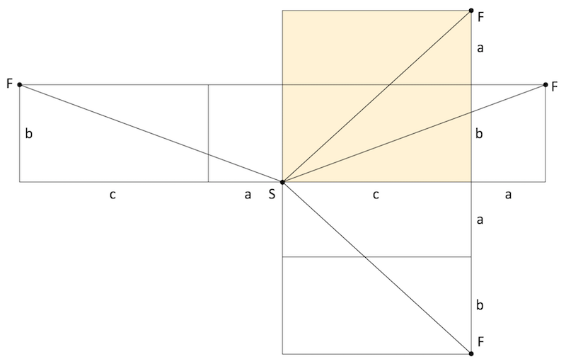

육면체의 한쪽 구석에서 다른 구석으로 가는 최단 경로 찾기
직육면체를 펼쳐 평면으로 생각하면 문제를 푸는 데 도움이 된다. 평면 위의 한 점에서 다른 점으로 가는 최단 경로는 직선이다. 한쪽 구석 에서 다른 구석 로 가는 경로는 네 가지가 있다.

직육면체 각 변의 길이를 라 하고, 인 경우, 최단 경로의 길이는 다음과 같이 구할 수 있다.
인 경우 를 바꿔가며 정수 해를 찾을 수 있는데, 와 를 따로 바꿔가며 계산하면 계산 회수가 늘어나 답을 구하는 속도가 느려질 것이다. 각 변의 길이는 정수이고 각 변이 정수로 된 가장 작은 직각 삼각형의 변 길이는 이므로, 인 경우의 조합을 찾는 게 더 빠를 것이다.
이라 하면, 가 정해졌을 때 인 직육면체 중 최단경로가 정수인 경우의 수를 다음과 같이 구할 수 있다. 인 경우에는 를 1부터 까지 바꿀 수 있다. 인 경우에는 를 부터 까지만 바꿀 수 있다.
Clojure 코드로는 다음과 작성할 수 있다.
(ns p086
(:require [util :refer [perfect-square?]]))
(defn cnt [c]
(apply +
(for [l (range 3 (inc (* 2 c))) ; l <= a+b
:when (perfect-square? (+ (* c c) (* l l)))]
(if (<= l c)
(quot l 2)
(- c (quot (- l 1) 2))))))
이제 를 3부터 차례로 증가시키면서 직육면체의 개수가 1백만을 넘을 때까지 직육면체의 개수를 누적해가면 된다.
(def ^:private threshold 1000000)
(defn solve []
(->> (iterate inc 3)
(map (fn [x] [x (cnt x)]))
(reductions (fn [[a1 a2] [b1 b2]] [b1 (+ a2 b2)]))
(drop-while (fn [[M cnt]] (<= cnt threshold)))
ffirst))
실행 결과는 다음과 같다.
p086=> (time (solve)) "Elapsed time: 197.473803 msecs" 1??8